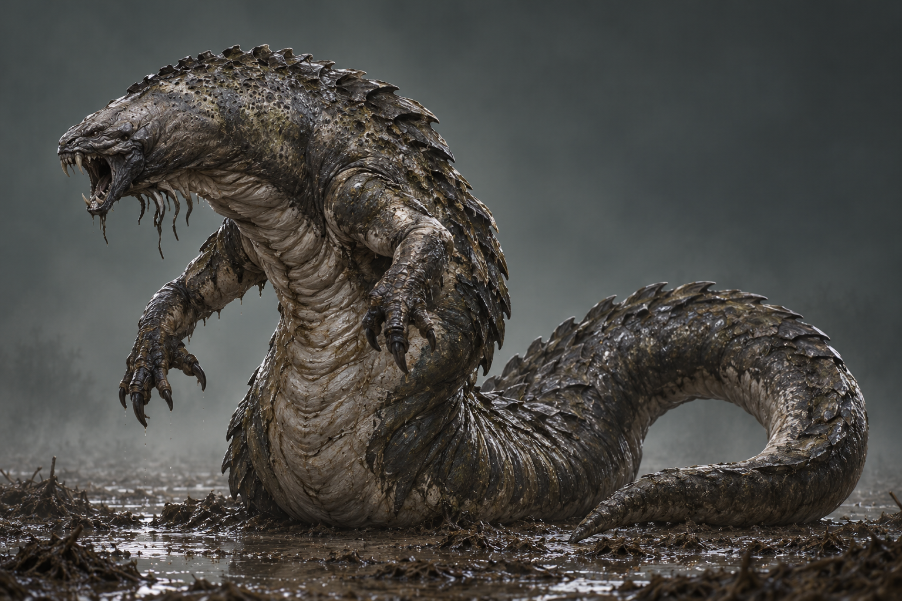
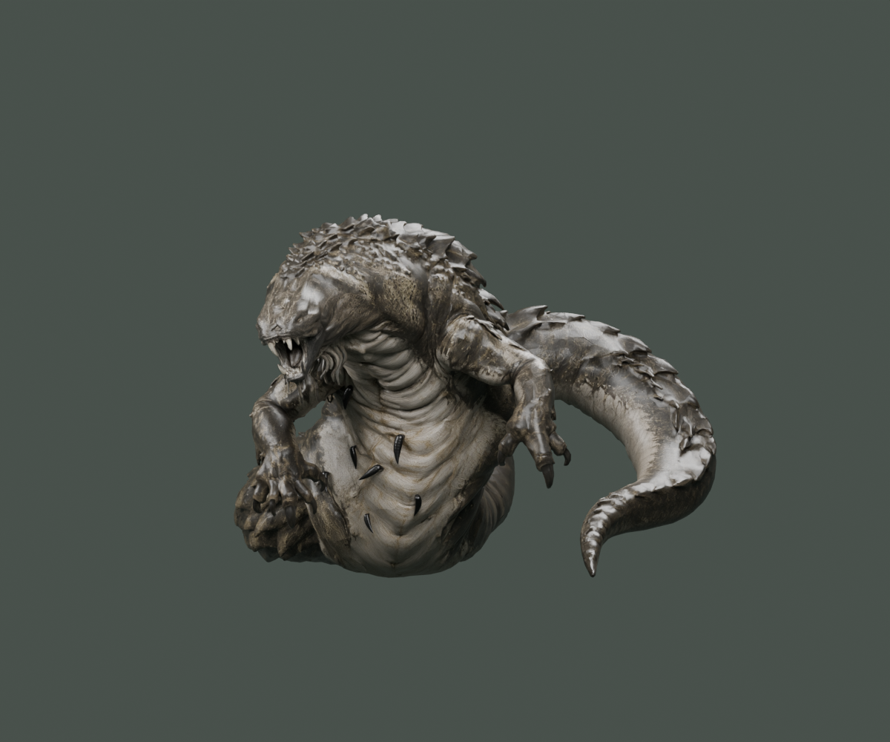
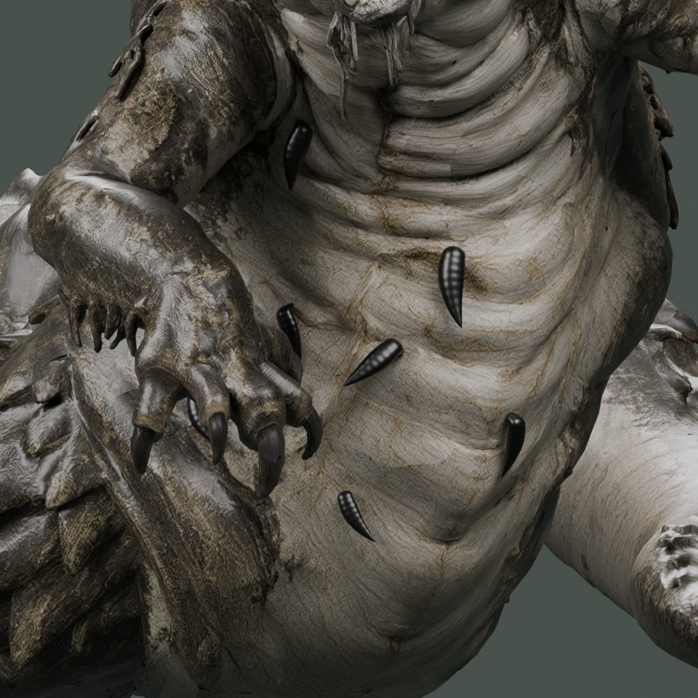
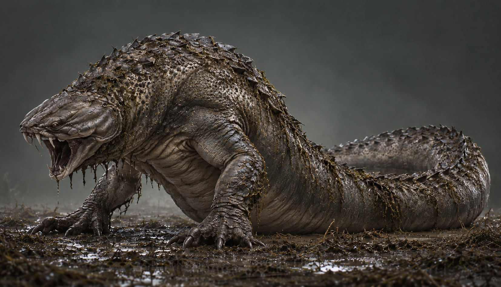
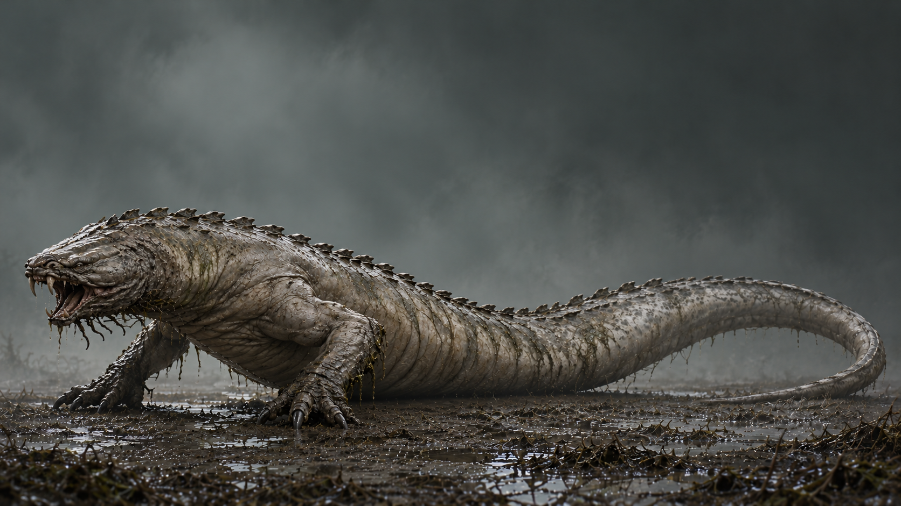
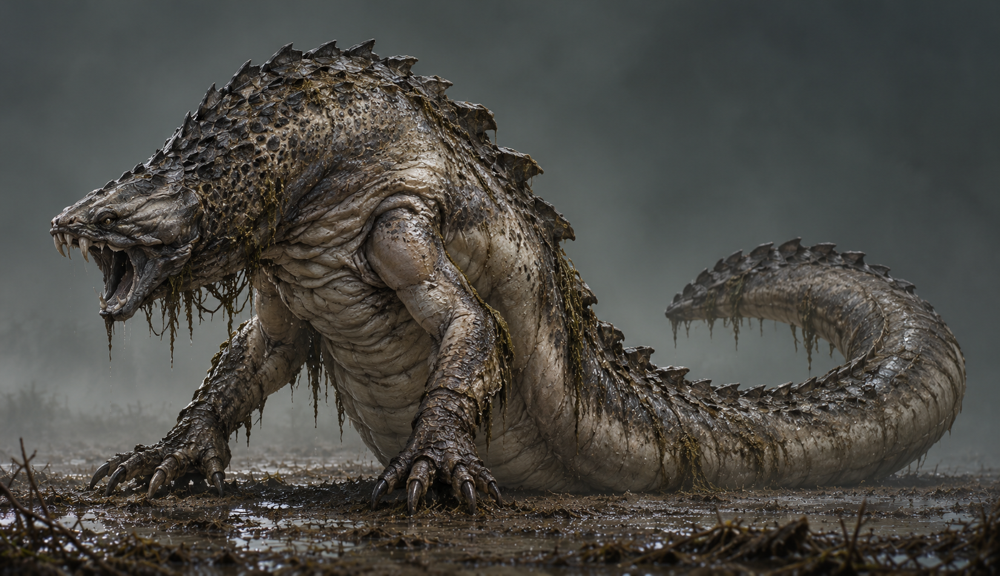
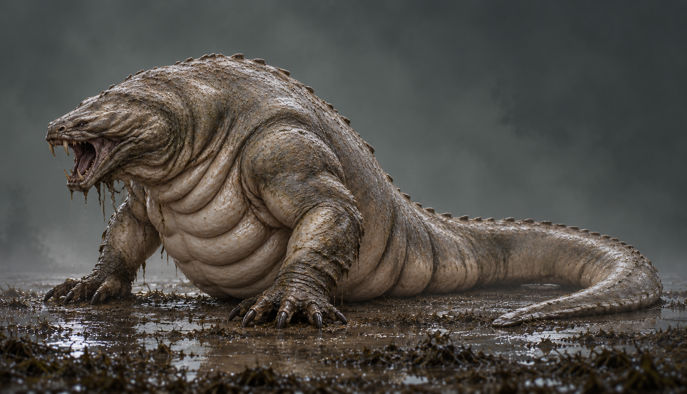
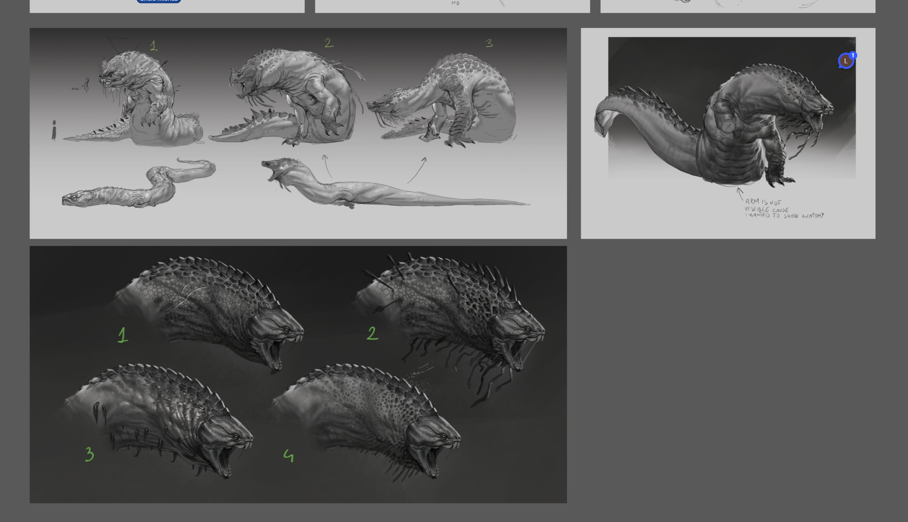

5 · Il Nodo Antico · SCELTO DA ROBERTO


Alta e raccolta: tronco a S, zampe sollevate e grande curva della coda; silhouette più verticale.
Apri immagine intera ↗Stessa base richiesta: testa 3 nel gruppo in basso, zampe 1 e corporatura 2 nel gruppo in alto. Cambiano profilo, massa del corpo, placche, pelle e postura della coda. Resa realistica coerente con i concept della Borda.
Riferimento del secondo miniboss, dal concept 5 scelto da Roberto. Sette sanguisughe più grosse e distanziate, come vermoni carnosi: attacchi integrati nella pelle, corpi arrotondati con pieghe sottili e code curve.
Accettazione visiva di Roberto · 24/10/2026: «è accettabile». Riguarda la revisione statica corrente mostrata nel render intero, con sette vermoni. Scala definitiva e posizionamento restano da fissare con la tana; Play e gameplay restano da verificare.


Anteprime PBR renderizzate localmente in Blender, non catture Unreal. Modello statico di riferimento; scala definitiva e posizionamento da fissare durante la costruzione della tana.
GLB · Lecora Fase 2 · FBX · Lecora Fase 2 · Sorgente Blender
117639 triangoli nella copia derivata. Originali Meshy conservati; 30 crediti effettivi per la singola generazione. Sanguisughe e alleggerimento eseguiti localmente.
Dati del modello e ricevute

Alta e raccolta: tronco a S, zampe sollevate e grande curva della coda; silhouette più verticale.
Apri immagine intera ↗
Compatta e massiccia: spalle larghe, dorso coperto da placche e coda pesante raccolta dietro.
Apri immagine intera ↗
Bassa e allungata: tronco disteso, profilo più orizzontale e coda lunga, con placche dorsali contenute.
Apri immagine intera ↗
Nuca corazzata: arco dorsale alto, placche più marcate e forte contrasto fra dorso e ventre ripiegato.
Apri immagine intera ↗
Carnosa: pelle più liscia e chiara, pieghe profonde, ventre pesante e poche placche sul dorso.
Apri immagine intera ↗Testa dal numero 3 dei quattro studi in basso; zampe dal corpo 1 in alto e corporatura dal corpo 2 in alto. La reference originale è conservata senza modifiche.

Riferimento della resa realistica: Borda, Il Velo della Foschia